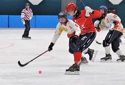
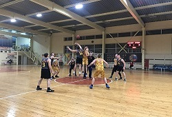
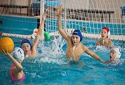
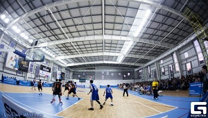

 Каждый год на базе катка "Новое поколение", проходят состязания между командами от 12 до 18 лет, хоть они традиционно проводятся с 15 по 30 ноября, на них очень жарко.
 Ежегодно октябрь становится самым насыщенным спортивными мероприятиями месяцем, этому способствует и Чемпионат города среди районов Волгограда, в котором сойдутся игроки всех возрастов, приходите поддержать своих друзей, близких, да и просто посмотерть за красивой и качественной игрой.
 В конце июля бассейн "Спартак" принимает у себя команды по водному поло возрастной категории "16-18", на эти состязания приезжают команды со всех уголков страны, чтобы побороться за титул чемпиона.
 Для студентов нет ничего важнее начала сезона Ассоциации студенческого баскетбола, в замечательном ФОК на 7 ветрах, команды всех вузов нашего города, сойдутся в борьбе за титул сильнейшей команды города и путевки на следующий, всероссийский этап "Лига Белова", весь этот праздник идет с конца октября и до середины апреля.